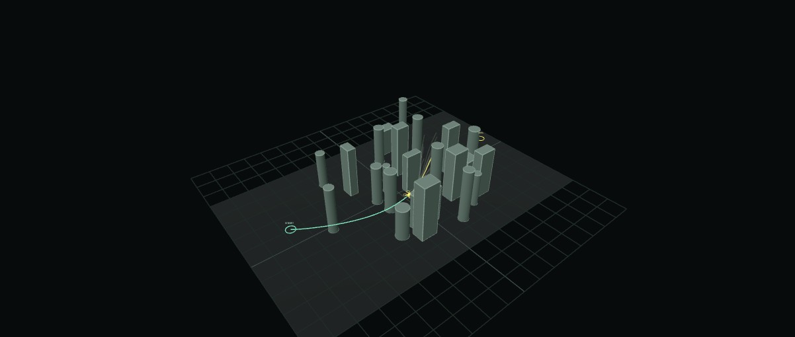

LANTERN
A Lightweight Trajectory-Set Planner
for Quadrotor Navigation
Anonymous authors
 Method
Method Live demo
Live demoOverview
LANTERN plans quadrotor motion through clutter from a single depth frame and the motion state. A narrow CNN and shared attention generate and score 24 executable quintic trajectories, with directional anchors providing alternatives around obstacles and six goal-adaptive queries supporting precise stopping. A common differentiable trajectory cost supervises generation and scoring; online, the lowest-scoring curve is selected and rebuilt at the reference handoff.
METHOD
From depth to an executable curve
Directional anchors define candidate roles. Shared attention determines where each candidate reads.
24 queries generate and score quintic curves; the selected curve is rebuilt from the handoff state.
One shared encoding
A narrow CNN extracts depth features once. Queries attend to image tokens across the full field of view.
Geometry-grounded candidates
A 4 × 6 directional layout provides coverage. Bounded residuals adjust each candidate to the observation.
Goal-relative stopping
Six queries adapt near the goal. The selected curve is reconstructed at the reference handoff.
EVALUATION
Navigation and onboard compute
Navigation success
4 scenes · 50 paired seeds per scene · 4m/s
| Planner | Sparse | Dense | Boxes | Walls | Total |
|---|---|---|---|---|---|
| LANTERN | 50 | 50 | 47 | 49 | 196/200 |
| YOPO | 46 | 28 | 25 | 25 | 124/200 |
| EGO-Planner | 48 | 36 | 32 | 47 | 163/200 |
| Fast-Planner | 40 | 36 | 34 | 38 | 148/200 |
64 m route · 1 m goal region · 40 s timeout · 3.2m/s²
Orin NX forward pass
3.93×Identical CUDA Graph settings · lower is better
Network timing excludes camera acquisition, ROS transport, and control.
Evaluation details
The 4m/s navigation counts, the 5m/s strict-stopping counts, and the 8m/s video examples use distinct protocols. The interactive demo uses publication weights with separate web terminal tuning at 5m/s and ideal tracking. Forward-pass timing comes from the registered compatibility instance; 0.260M denotes the active model after pruning unused branches. No new Orin timing of the pruned instance is reported here.
Precise goal stopping
50 trials per variant · 5m/s · 4 m tree spacing
- LANTERN
- 50/50
- no goal queries
- 0/50
- YOPO
- 0/50
Error ≤ 0.1 m and speed ≤ 0.2m/s, held for 0.5 s.
The stopping video is a separate qualitative example (seed 61002); the counts come from the 50-trial evaluation.
REAL ROBOT
Indoor and outdoor flights
Selected onboard deployment recordings · 1×
Outdoor 5 · 5m/s · VINS estimate
Dials show recorded velocity estimates. Indoor: motion capture. Outdoor: VINS.
INTERACTIVE DEMO
Run LANTERN in your own scene
Qualitative navigation on generated obstacle scenes.

Terminal tuned · 5m/s · Ideal trajectory tracking
Paper and resources
LANTERN: A Lightweight Trajectory-Set Planner for Quadrotor Navigation
 Supplementary video
Supplementary videoThe research repository is withheld during anonymous review.